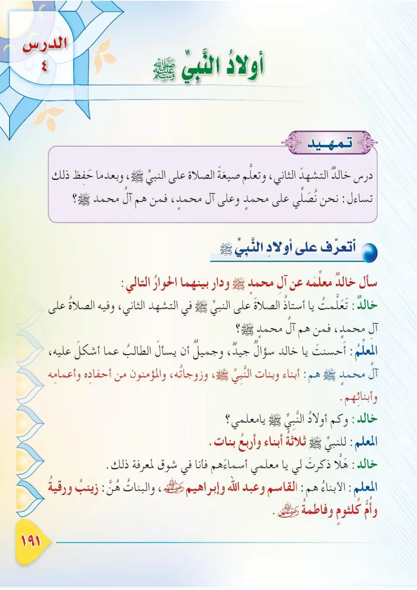
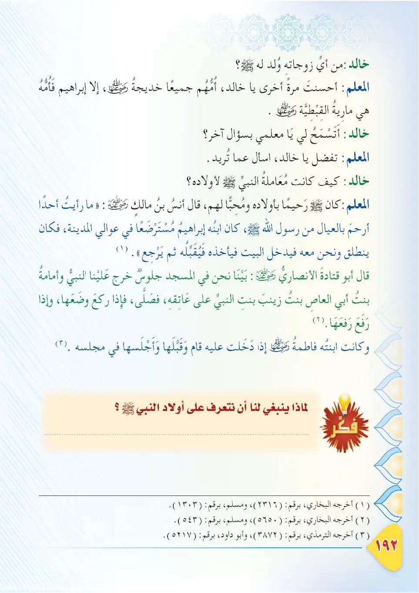
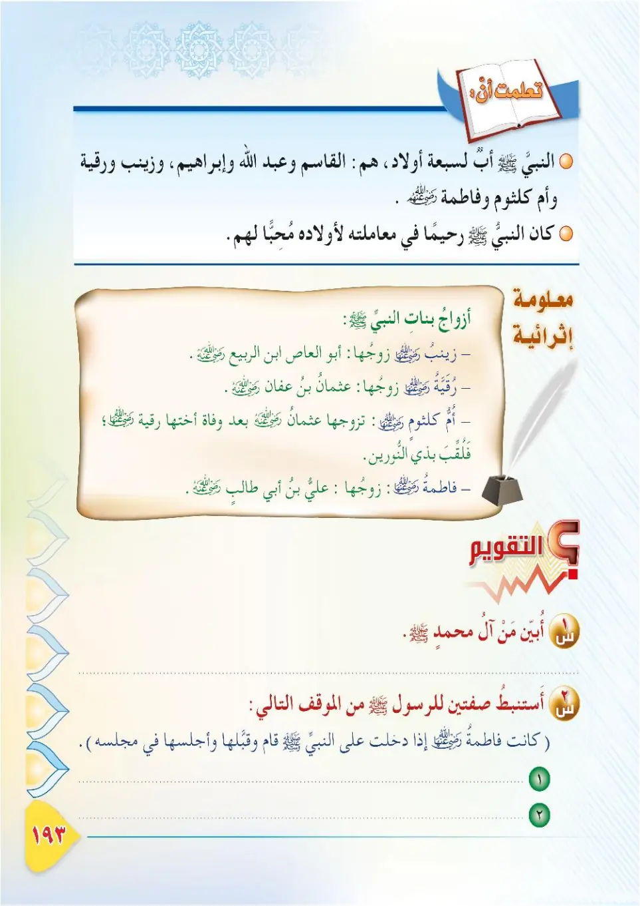
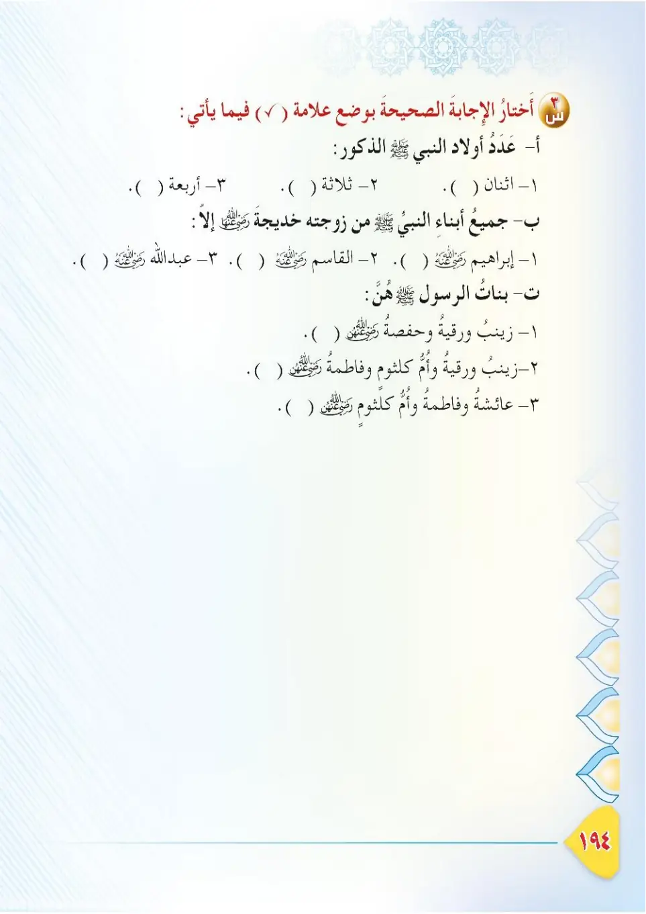

Stage 3·المرحلة الثالثة📖 Unit 6
أَوْلَادُ النَّبِيِّ ﷺ The Children of the Prophet ﷺ
From the Textbookpp. 192–195




كَانَ لِلنَّبِيِّ ﷺ أَبْنَاءٌ وَبَنَاتٌ مِنْ أُمِّ الْمُؤْمِنِينَ خَدِيجَةَ رَضِيَ اللهُ عَنْهَا، وَابْنٌ مِنْ مَارِيَةَ الْقِبْطِيَّةِ رَضِيَ اللهُ عَنْهَا. فَلْنَعْرِفْهُمْ — فِي هَذَا الدَّرْسِ — وَلْنَتَعَلَّمْ كَيْفَ كَانَ النَّبِيُّ ﷺ يُحِبُّ الصِّغَارَ.
Kana lin-nabiyyi ﷺ abna'un wa banatun min Umm al-Mu'minine Khadijata radiyallahu 'anha, wa ibnun min Mariyata al-Qibtiyyata radiyallahu 'anha. Falna'rifhum — fi hadha ad-dars — wa nata'allam kayfa kana an-nabiyyu ﷺ yuhibbu as-sighar.
The Prophet ﷺ had sons and daughters from Umm al-Mu'minin Khadijah, may Allah be pleased with her, and a son from Mariyah al-Qibtiyyah, may Allah be pleased with her. In this lesson, let us get to know them and learn how the Prophet ﷺ loved children.
நபி ﷺ அவர்களுக்கு உம்முல் முஃமினீன் கதீஜா (ரலி), மரியா அல்-கிப்திய்யா (ரலி) ஆகியோரிடமிருந்து மகன்களும் மகள்களும் இருந்தனர். இந்தப் பாடத்தில் அவர்களை அறிந்து, சிறுவர்கள் மீது நபி ﷺ கொண்ட அன்பைக் கற்றுக்கொள்வோம்.
عَنْ أَنَسِ بْنِ مَالِكٍ رَضِيَ اللهُ عَنْهُ قَالَ: كَانَ النَّبِيُّ ﷺ أَرْحَمَ النَّاسِ بِالْعِيَالِ، وَكَانَ لَهُ ابْنٌ مُسْتَرْضَعٌ فِي نَاحِيَةِ الْمَدِينَةِ، وَكَانَ ظِئْرُهُ قَيْنًا، فَكَانَ يَأْتِيهِ وَالْبَيْتُ قَدْ دَخَّنَ بِإِذْخِرٍ، فَيُقَبِّلُهُ وَيَشُمُّهُ. أَخْرَجَهُ الْبُخَارِيُّ فِي الْأَدَبِ الْمُفْرَدِ.
'An Anasi ibn Malikin radiyallahu 'anhu qal: kana an-nabiyyu ﷺ arhama an-nasi bil-'iyal, wa kana lahu ibnun mustarda'an fi nahiyati al-Madinah, wa kana zhi'ruhu qaynan, fakano ya'tihi wal-baytu qad dakhana bi-ithkhir, fayuqabbiluhu wa yashummu. Akhrajahu al-Bukhari fi al-Adab al-Mufrad.
Anas ibn Malik, may Allah be pleased with him, said: "The Prophet ﷺ was the most merciful of people towards children. He had a son who was being nursed in a suburb of Madinah, and the husband of the wet-nurse was a blacksmith. He would go to them while the house was filled with smoke from the fire, and he would kiss the child and smell him." Narrated by Al-Bukhari in Al-Adab al-Mufrad.
அனஸ் (ரலி) கூறினார்கள்: "சிறுவர்களுக்கு நபி ﷺ தான் மிகவும் இரக்கம் காட்டுவார். மதீனாவின் ஓர் ஓரத்தில் பால் கொடுக்கப்பட்ட ஒரு மகன் இருந்தார்; பால் கொடுத்தவரின் கணவர் கொல்லன். புகை நிறைந்த அந்த வீட்டிற்குச் சென்று குழந்தையை முத்தமிட்டு மோப்பம் பிடிப்பார்கள்." (புகாரி: அல்-அதப் அல்-முஃப்ரத்)
عَنْ أَبِي قَتَادَةَ الْأَنْصَارِيِّ رَضِيَ اللهُ عَنْهُ قَالَ: رَأَيْتُ النَّبِيَّ ﷺ يَؤُمُّ النَّاسَ وَأُمَامَةُ بِنْتُ أَبِي الْعَاصِ عَلَى عَاتِقِهِ، فَإِذَا رَكَعَ وَضَعَهَا، وَإِذَا رَفَعَ أَعَادَهَا. أَخْرَجَهُ مُسْلِمٌ.
'An Abi Qatadata al-Ansariyya radiyallahu 'anhu qal: ra'aytu an-nabiyya ﷺ yu'ummu an-nasa wa Umamatu bintu Abil-'Asi 'ala 'atiqih, fa-idha raka'a wad'aha, wa idha rafa'a a'adaha. Akhrajahu Muslim.
Abu Qatadah al-Ansari, may Allah be pleased with him, said: "I saw the Prophet ﷺ leading the people in prayer with Umamah bint Abi al-'As on his shoulder. When he bowed, he put her down, and when he raised his head, he lifted her again." Narrated by Muslim.
அபூ கதாதா அல்-அன்சாரி (ரலி) கூறினார்கள்: "உமாமா இப்னத் அபீ அல்-ஆஸைத் தோளில் வைத்துக் கொண்டு நபி ﷺ மக்களுக்குத் தலைமை தொழவைப்பதைக் கண்டேன்; ருகூ செய்யும்போது அவரைக் கீழே வைப்பார்கள்; தலை உயர்த்தும்போது மீண்டும் தூக்குவார்கள்." (முஸ்லிம்)
أَبْنَاءُ النَّبِيِّ ﷺ الذُّكُورُ: ١- الْقَاسِمُ: وَمَاتَ وَهُوَ صَغِيرٌ. ٢- عَبْدُ اللهِ: وُلِدَ بَعْدَ الْبَعْثَةِ، وَمَاتَ صَغِيرًا. ٣- إِبْرَاهِيمُ: وُلِدَ مِنْ مَارِيَةَ الْقِبْطِيَّةِ، وَمَاتَ وَهُوَ ابْنُ شَهْرَيْنِ، وَبَكَى عَلَيْهِ النَّبِيُّ ﷺ وَمَعَهُ عَبْدُ الرَّحْمَنِ بْنُ عَوْفٍ.
Abna'u an-nabiyyi ﷺ adh-dhukur: 1- Al-Qasimu wa mata wa huwa saghir. 2- 'Abdullah: wulida ba'da al-ba'thati, wa mata saghiran. 3- Ibrahimu: wulida min Mariyata al-Qibtiyyah, wa mata wa huwa ibnu shaharayni, wa baka 'alayhi an-nabiyyu ﷺ wa ma'ahu 'Abdu-r-Rahmani ibnu 'Awf.
The sons of the Prophet ﷺ:
1. Al-Qasim: he died as a child.
2. 'Abdullah: he was born after the Revelation and died as a child.
3. Ibrahim: he was born from Mariyah al-Qibtiyyah and died when he was two months old; the Prophet ﷺ wept for him in the presence of 'Abdur-Rahman ibn 'Awf.
நபி ﷺ அவர்களின் மகன்கள்:
1. காஸிம்: சிறுவயதில் இறந்தார்.
2. அப்துல்லாஹ்: வஹ்யி வந்த பிறகு பிறந்து, சிறுவயதில் இறந்தார்.
3. இப்ராஹீம்: மரியா அல்-கிப்திய்யாவிடம் பிறந்து, 2 மாதங்களில் இறந்தார்; நபி ﷺ அப்துர் ரஹ்மான் இப்னு அவ்ஃப் முன்னிலையில் அவருக்காக அழுதார்கள்.
بَنَاتُ النَّبِيِّ ﷺ: ١- زَيْنَبُ: تَزَوَّجَهَا أَبُو الْعَاصِ بْنُ الرَّبِيعِ. ٢- رُقَيَّةُ: تَزَوَّجَهَا عُثْمَانُ بْنُ عَفَّانَ. ٣- أُمُّ كُلْثُومٍ: تَزَوَّجَهَا عُثْمَانُ بْنُ عَفَّانَ بَعْدَ رُقَيَّةَ. ٤- فَاطِمَةُ: تَزَوَّجَهَا عَلِيُّ بْنُ أَبِي طَالِبٍ، وَهِيَ أُمُّ الْحَسَنِ وَالْحُسَيْنِ، وَهِيَ سَيِّدَةُ نِسَاءِ أَهْلِ الْجَنَّةِ.
Banatu an-nabiyyi ﷺ: 1- Zaynab: tazawwajaha Abu al-'Asi ibnu ar-Rabi'. 2- Ruqayyah: tazawwajaha 'Uthmanu ibnu 'Affan. 3- Umm Kulthum: tazawwajaha 'Uthmanu ibnu 'Affan ba'da Ruqayyah. 4- Fatimah: tazawwajaha 'Aliyyu ibnu Abi Talib, wa hiya Ummu al-Hasani wal-Husayn, wa hiya sayyidatu nisa'i ahli al-jannah.
The daughters of the Prophet ﷺ:
1. Zaynab: she married Abu al-'As ibn ar-Rabi'.
2. Ruqayyah: she married 'Uthman ibn 'Affan.
3. Umm Kulthum: 'Uthman ibn 'Affan married her after Ruqayyah.
4. Fatimah: she married 'Ali ibn Abi Talib and is the mother of al-Hasan and al-Husayn, and she is the mistress of the women of Paradise.
நபி ﷺ அவர்களின் மகள்கள்:
1. ஜைனப்: அபூ அல்-ஆஸை மணந்தார்.
2. ருகய்யா: உத்மான் இப்னு அஃப்ஃபானை மணந்தார்.
3. உம்மு குல்சூம்: ருகய்யாவுக்குப் பிறகு உத்மானையே மணந்தார்.
4. ஃபாத்திமா: அலீ இப்னு அபீ தாலிபை மணந்தார்; ஹசன், ஹுசைன் ஆகியோரின் தாய்; சொர்க்கப் பெண்களின் தலைவி.